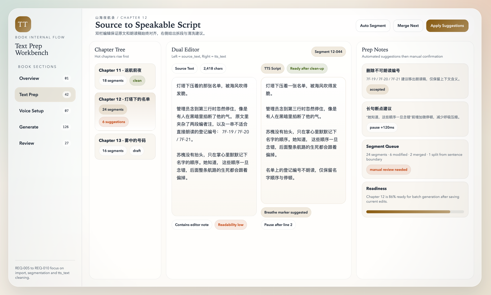

AI Publisher Local Studio
One Page Operator Guide
Audiobook Quick Run
有聲書一頁操作說明
適用於非技術同事。只需要照著主流程操作，就能把文字稿轉成可審核、可匯出的 audiobook。
主流程
登入 -> 新建專案 -> 匯入文本 -> 檢查 tts_text -> 選聲音 -> 生成 -> 審核 -> 匯出
操作步驟
- 登入系統：打開 `http://127.0.0.1:8000`，使用 `admin@example.com / admin123` 登入。
- 新建專案：填寫書名、作者、語言與簡短說明，建立後進入專案；若後續要擴展漫畫或 Video，可在 `系統設定` 先保存模型模板。
- 匯入文本：上傳 `txt`、`md` 或 `docx`，系統會自動拆章拆段。
- 整理朗讀稿：在 `Text Prep` 檢查每段 `tts_text`，把不適合朗讀的文字改成自然口語。
- 選擇聲音：在 `Voice Setup` 指定本機語音或已配置的 AI provider。
- 生成音訊：到 `Generate` 執行段落或章節生成，等待每段出現可播放音訊。
- 審核通過：到 `Review` 播放段落，沒問題就通過，有問題就退回重生。
- 匯出成品：到 `Assemble / Export` 渲染章節並匯出單章音訊或全書 `zip`。
開始前請確認
準備好一本文字稿
先用預設聲線跑通流程
以 `tts_text` 作為朗讀依據
只要有問題，優先重生單段
畫面位置

`Text Prep` 是最重要的一步。先把每段文字整理成適合朗讀的版本，再進入生成。
常見提醒
- 章節切分不對，先回 `Text Prep` 修正。
- 朗讀不自然，先改 `tts_text`，不要只反覆重跑。
- 演示時可直接用本機聲音，不一定要先接真實 AI。
- `漫畫設定 / Video 設定` 目前只保存配置，不會直接生成漫畫或影片。